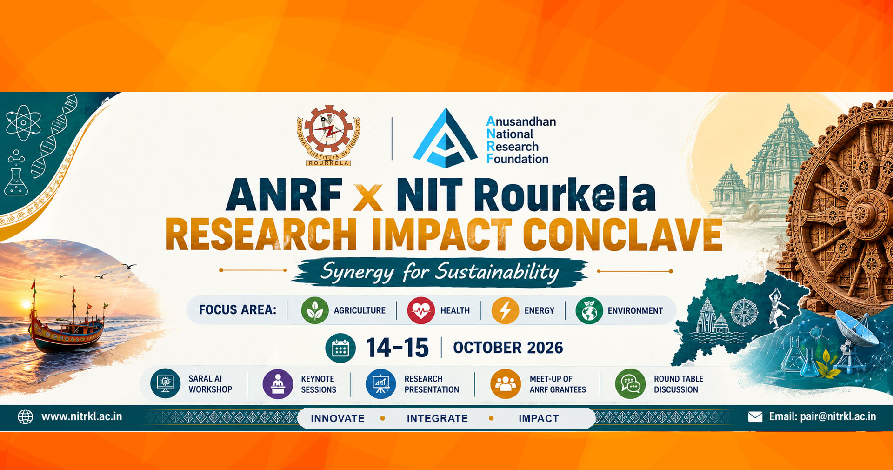

INNOVATE
Bold ideas that push frontiers
On Sustainable Agriculture, Health, Energy and Environment

The ANRF + NIT Rourkela Research Impact Conclave 2026 is a platform that brings together ANRF grantees, researchers, faculty members, students, partner institutions, industry representatives and other stakeholders.
The event will provide opportunities to converge, share knowledge, exchange ideas and build collaborative partnerships around sustainable agriculture, health, energy and environment.
Through inaugural sessions, hands-on training, keynote sessions, research communication, poster presentations, networking and roundtable discussions, the conclave will connect research excellence with tangible societal impact.
Bold ideas that push frontiers
Stronger connections across disciplines
Research for tangible benefit
Ideas that motivate meaningful action
Excellence through research and collaboration
To encourage and recognize outstanding research communication, Best Poster Awards will be presented during the poster presentation at the Research Impact Conclave 2026.
Interdisciplinary research and innovation for a more sustainable future.
Sustainable farming, food security and AI-driven animal welfare.
Affordable healthcare technologies, AI and digital health solutions.
Energy storage, smart grids and resilient systems.
AI and digital tools for environmental monitoring and protection.
NIT Rourkela is a premier institute of national importance committed to excellence in education, research, innovation and societal development.
Visit website ↗ANRF aims to strengthen India’s research and innovation ecosystem and facilitate research with meaningful national and societal impact.
Visit website ↗Formal inauguration of the Research Impact Conclave 2026.
Introduction, information sharing and practical engagement with SARAL AI.
Short presentations by ANRF grantees from NIT Rourkela, spoke institutes and nearby institutes.
Strategies and techniques for effectively sharing research on social media.
Sustainable farming practices; AI-driven solutions for animal welfare.
Affordable healthcare technologies and AI-enabled digital health solutions.
Keynotes on innovations in energy storage and smart grids; AI and digital tools for environmental monitoring.
Best Poster Award and review of the progress of ANRF-PAIR projects.
Agriculture, Health, Energy & Environment.
Register your interest to participate. Fill the official Google Form.
Who can participate ?
Registration deadline, fee and participation categories will be updated here.
National Institute of Technology Rourkela
Rourkela, Odisha, India – 769008
Date: 14–15 October 2026
Event timing: 09:00 AM – 06:00 PM
Accommodation is available for outstation participants, subject to availability and applicable charges.
To book a room and view accommodation details, visit the NIT Rourkela Guest House website ↗
For booking, email managergh@nitrkl.ac.in and keep pic-gh@nitrkl.ac.in in CC.
Email for Booking ↗Researchers, faculty members, students, ANRF grantees, partner institutions, industry representatives and other stakeholders may participate.
Registration will be completed through the official Google Form provided above.
Certificates will be provided to all the participants.
For any further information or queries regarding the conclave,
please feel free to contact us.